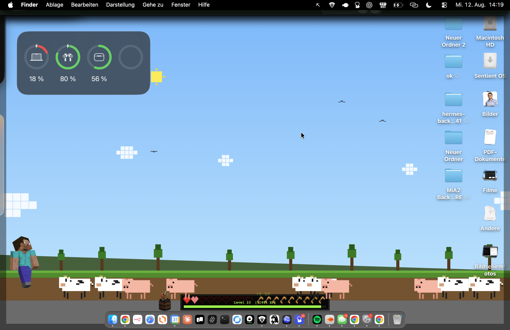
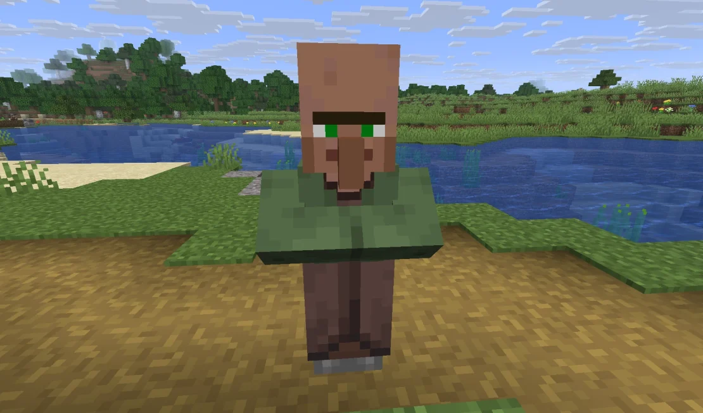
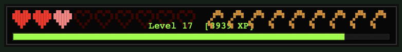
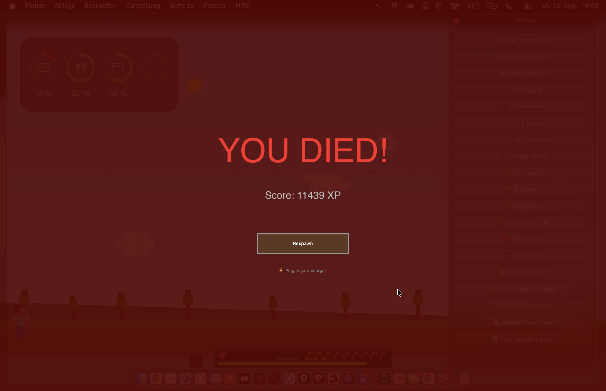

⌘+C
Copy = Spawn a cow

PixelHUD turns the ordinary signals of your day—battery, typing, focus and finished tasks—into the hearts, XP and tiny victories you never really grew out of.




Every keystroke and click earns XP. New levels unlock music discs for your jukebox—bringing that Minecraft nostalgia back into your workday.


When your Mac is running out of power, PixelHUD turns low battery into a full-screen death screen.

PixelHUD's landscape lives behind your windows—sun, clouds, hills, trees and wandering creatures shifting from daylight into night.
Your friends tab shows the people in your PixelHUD world, their level and XP—with live activity used to show who is around now.

A simple slider in PixelHUD's menu scales Steve up or down. Keep him subtle—or give him the screen presence he thinks he deserves.
Activity is processed locally. Keystrokes aren't recorded, stored or transmitted.
Apple Silicon and Intel Macs, macOS 13 or newer. No game installation required.
Designed as a lightweight desktop companion—not another app demanding your attention.
Bring a little wonder back to the desktop you look at every day.
Download PixelHUD for Mac ↓Before you enter.
Neither. It is an independent desktop app that adds a pixel-art HUD, playful effects and progress systems to your everyday Mac.
No. PixelHUD runs on its own and does not connect to or modify any game.
No. It only detects activity to award XP. Keystrokes are not recorded, stored or transmitted.
This is a fan project—we love Minecraft, built this for ourselves, and won't charge anything.
Nothing. We do not save or store any data. For the typing and clicking sound effects, PixelHUD is only notified that you pressed a key—not which key—and that you clicked your mouse, without any further details about what or where you clicked.
Yes. Assign local audio files to your jukebox discs by drag and drop or the file picker. They stay on your device.
PixelHUD supports Apple Silicon and Intel Macs running macOS 13 or newer.